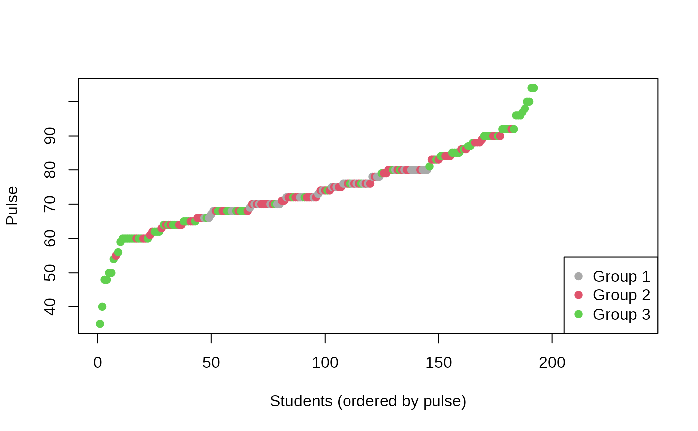
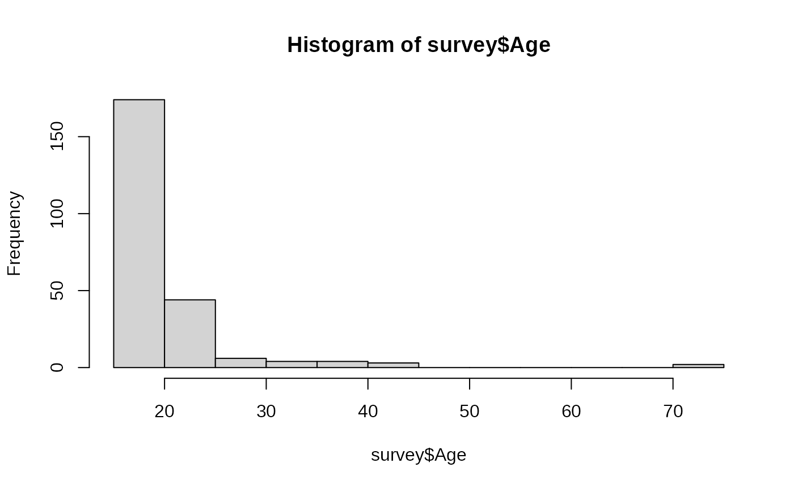

vignettes/Anticlustering_in_2025.Rmd
Anticlustering_in_2025.RmdThis vignette is (in October 2025) the most up-to-date reference for
doing anticlustering. Here, I summarize some of the things I learned
about—or implemented for—anticlustering, which may not be documented in
earlier work (e.g., papers, other vignettes). For example, if you have
used anticlust before, you may be interested to know about
recent changes, available from version 0.8.12 onward:
factors (which is R’s data structure for
categorical variables)anticlustering()
I will use these changes in the running example below. Of course, in
both cases (categorical variables and NAs), a more
specialized handling could be preferred in certain settings; defaults
can never be optimal for all applications.
Moreover, we have implemented the three phase search algorithm by Yang et al., which seems to be the most powerful algorithm for anticlustering that we have included so far. I will showcase it below.
To reproduce the running example, install the “MASS” package that
contains the survey data set that is used.
library(MASS)
data(survey) # load data set
nrow(survey) # number of students
#> [1] 237
head(survey, n=10) # look at the data
#> Sex Wr.Hnd NW.Hnd W.Hnd Fold Pulse Clap Exer Smoke Height M.I
#> 1 Female 18.5 18.0 Right R on L 92 Left Some Never 173.00 Metric
#> 2 Male 19.5 20.5 Left R on L 104 Left None Regul 177.80 Imperial
#> 3 Male 18.0 13.3 Right L on R 87 Neither None Occas NA <NA>
#> 4 Male 18.8 18.9 Right R on L NA Neither None Never 160.00 Metric
#> 5 Male 20.0 20.0 Right Neither 35 Right Some Never 165.00 Metric
#> 6 Female 18.0 17.7 Right L on R 64 Right Some Never 172.72 Imperial
#> 7 Male 17.7 17.7 Right L on R 83 Right Freq Never 182.88 Imperial
#> 8 Female 17.0 17.3 Right R on L 74 Right Freq Never 157.00 Metric
#> 9 Male 20.0 19.5 Right R on L 72 Right Some Never 175.00 Metric
#> 10 Male 18.5 18.5 Right R on L 90 Right Some Never 167.00 Metric
#> Age
#> 1 18.250
#> 2 17.583
#> 3 16.917
#> 4 20.333
#> 5 23.667
#> 6 21.000
#> 7 18.833
#> 8 35.833
#> 9 19.000
#> 10 22.333
sapply(survey, anyNA) # most variables contain missing values
#> Sex Wr.Hnd NW.Hnd W.Hnd Fold Pulse Clap Exer Smoke Height M.I
#> TRUE TRUE TRUE TRUE FALSE TRUE TRUE FALSE TRUE TRUE TRUE
#> Age
#> FALSEThe survey data set contains some demographic
information on a student sample. Imagine you wish to assign students to
three different dormitories and want to create a similar groups of
students in each house. In this example I will use the following
features (brackets contain the description contained in the R
documentation, ?MASS::survey):
Categorical features:
Sex: The sex of the student (Factor with levels “Male”
and “Female”.)W.Hnd: writing hand of student. (Factor, with levels
“Left” and “Right”.)Exer: how often the student exercises. (Factor, with
levels “Freq” (frequently), “Some”, “None”.)Smoke: how much the student smokes. (Factor, levels
“Heavy”, “Regul” (regularly), “Occas” (occasionally), “Never”.)All of the categorical features are already defined as factor variables, which I will make use of.
Numeric features:
Pulse: pulse rate of student (beats per minute).Height: height of the student in centimetres.Age: age of the student in years.I will select these features as a new data frame and apply the default anticlustering method to create 3 equal-sized groups.
features <- c("Sex", "W.Hnd", "Exer", "Smoke", "Pulse", "Height", "Age")
survey$House <- anticlustering(
survey[, features],
K = 3
)I use the tableone package to illustrate the descriptive
statistics by group. For numeric variables, we get means and standard
deviations; for categorical variables, we get counts and percentages. It
even gives a p-value as a (sort of) measure of imbalance among
houses for each variable. For categorical variables, the
p-value is the result of a chi squared test. Higher values
indicate that the observed distribution of categories among houses is
more uniform. For numeric variables, the oneway.test is
used, which compares 2 or several means (for 2 means, it is equivalent
to the t-test). Higher p-values indicate less
discrepancy between group means (however, other characteristics such as
the standard deviation are not considered).
library(tableone)
CreateTableOne(features, strata = "House", data = survey)
#> Stratified by House
#> 1 2 3 p test
#> n 79 79 79
#> Sex = Male (%) 40 (50.6) 41 (52.6) 37 (46.8) 0.766
#> W.Hnd = Right (%) 73 (92.4) 72 (91.1) 73 (93.6) 0.846
#> Exer (%) 0.803
#> Freq 37 (46.8) 40 (50.6) 38 (48.1)
#> None 6 ( 7.6) 8 (10.1) 10 (12.7)
#> Some 36 (45.6) 31 (39.2) 31 (39.2)
#> Smoke (%) 0.363
#> Heavy 4 ( 5.1) 2 ( 2.6) 5 ( 6.3)
#> Never 61 (77.2) 62 (79.5) 66 (83.5)
#> Occas 5 ( 6.3) 8 (10.3) 6 ( 7.6)
#> Regul 9 (11.4) 6 ( 7.7) 2 ( 2.5)
#> Pulse (mean (SD)) 74.38 (11.62) 73.92 (13.93) 74.15 (3.53) 0.971
#> Height (mean (SD)) 172.76 (11.08) 172.16 (5.29) 172.14 (11.25) 0.910
#> Age (mean (SD)) 19.49 (2.99) 20.22 (6.80) 21.41 (8.35) 0.170By default, the anticlustering() method maximizes the
diversity objective, which strives for a similar overall
data distribution among groups. It is difficult to assess the
adequateness of the solution without a comparison. So let us first add
an random assignment as baseline comparison:
survey$Rnd_House <- sample(survey$House)
CreateTableOne(features, strata = "Rnd_House", data = survey)
#> Stratified by Rnd_House
#> 1 2 3 p test
#> n 79 79 79
#> Sex = Male (%) 34 (43.6) 48 (60.8) 36 (45.6) 0.062
#> W.Hnd = Right (%) 74 (93.7) 69 (88.5) 75 (94.9) 0.270
#> Exer (%) 0.401
#> Freq 34 (43.0) 43 (54.4) 38 (48.1)
#> None 6 ( 7.6) 8 (10.1) 10 (12.7)
#> Some 39 (49.4) 28 (35.4) 31 (39.2)
#> Smoke (%) 0.252
#> Heavy 3 ( 3.8) 5 ( 6.4) 3 ( 3.8)
#> Never 62 (78.5) 57 (73.1) 70 (88.6)
#> Occas 8 (10.1) 7 ( 9.0) 4 ( 5.1)
#> Regul 6 ( 7.6) 9 (11.5) 2 ( 2.5)
#> Pulse (mean (SD)) 73.88 (10.79) 72.83 (12.97) 75.86 (10.98) 0.325
#> Height (mean (SD)) 169.76 (9.76) 175.67 (9.65) 172.02 (9.40) 0.002
#> Age (mean (SD)) 20.98 (8.75) 20.05 (4.83) 20.09 (5.13) 0.597The p-values tend to be lower, and the p-value for height would even be considered “significant” in an inference testing setting (however, note that such an interpretation is not appropriate in this setting). So, apparently, anticlustering helped to form a more even observed distribution of the input variables among houses.
I think that the result from the “default” anticlustering method are okay’ish. However, let’s assume we want to ensure an even more optimized assignment where the variables are more even among houses. Here I list three options:
A first step to improve results is using standardization. It always
should be used (especially when using categorical and numeric
variables), but as discussed elsewhere, it is not the default. Let’s
repeat our previous code but now use standardization with the
standardize argument.
survey$House2 <- anticlustering(
survey[, features],
K = 3,
standardize = TRUE
)
CreateTableOne(features, strata = "House2", data = survey)
#> Stratified by House2
#> 1 2 3 p test
#> n 79 79 79
#> Sex = Male (%) 39 (49.4) 39 (50.0) 40 (50.6) 0.987
#> W.Hnd = Right (%) 74 (93.7) 72 (91.1) 72 (92.3) 0.835
#> Exer (%) 0.991
#> Freq 39 (49.4) 38 (48.1) 38 (48.1)
#> None 7 ( 8.9) 8 (10.1) 9 (11.4)
#> Some 33 (41.8) 33 (41.8) 32 (40.5)
#> Smoke (%) 0.999
#> Heavy 4 ( 5.1) 4 ( 5.1) 3 ( 3.8)
#> Never 63 (79.7) 63 (79.7) 63 (80.8)
#> Occas 6 ( 7.6) 6 ( 7.6) 7 ( 9.0)
#> Regul 6 ( 7.6) 6 ( 7.6) 5 ( 6.4)
#> Pulse (mean (SD)) 74.53 (14.50) 73.75 (11.33) 74.09 (4.65) 0.922
#> Height (mean (SD)) 172.60 (11.29) 172.24 (5.02) 172.25 (10.89) 0.969
#> Age (mean (SD)) 19.98 (4.04) 20.54 (7.73) 20.60 (7.11) 0.802Standardization has a remarkable effect, in particular on the categorical variables. So you definitely should use it: It ensures that all variables are equally important when conducting anticlustering.
The method argument determines the algorithm, which
conducts the anticlustering optimization. The default is
exchange, which is a compromise between speed and solution
quality. In many applications, it is possible to use a better algorithm
because speed is not an issue. Using method = local-maximum
basically maintains the same algorithm, but runs longer until a
so-called local maximum is reached. It would be a good next step.
However, here I directly use the tree phase search algorithm, which is
new in anticlust and outperforms the
local-maximum method. Sometimes, it can even be faster.
survey$House3 <- anticlustering(
survey[, features],
K = 3,
standardize = TRUE,
method = "3phase"
)
CreateTableOne(features, strata = "House3", data = survey)
#> Stratified by House3
#> 1 2 3 p test
#> n 79 79 79
#> Sex = Male (%) 38 (48.7) 40 (50.6) 40 (50.6) 0.962
#> W.Hnd = Right (%) 72 (92.3) 73 (92.4) 73 (92.4) 1.000
#> Exer (%) 1.000
#> Freq 39 (49.4) 38 (48.1) 38 (48.1)
#> None 8 (10.1) 8 (10.1) 8 (10.1)
#> Some 32 (40.5) 33 (41.8) 33 (41.8)
#> Smoke (%) 0.999
#> Heavy 4 ( 5.1) 4 ( 5.1) 3 ( 3.8)
#> Never 63 (79.7) 62 (79.5) 64 (81.0)
#> Occas 7 ( 8.9) 6 ( 7.7) 6 ( 7.6)
#> Regul 5 ( 6.3) 6 ( 7.7) 6 ( 7.6)
#> Pulse (mean (SD)) 73.60 (10.40) 74.38 (4.92) 74.49 (15.08) 0.890
#> Height (mean (SD)) 172.43 (5.16) 172.31 (11.41) 172.41 (10.72) 0.997
#> Age (mean (SD)) 20.53 (7.57) 20.46 (7.05) 20.13 (4.44) 0.917It seems that using the improved algorithm also translated into a more even distribution of variables among groups.
In some settings we may be interests in optimizing similarity with
regard to certain distribution characteristics among groups. One
possibility is to focus on the average of each variable. Though I
strongly discourage focusing on mean values alone (e.g., see Papenberg,
2024), let’s discuss here how it could be done. To just focus on mean
values, we can replace the default diversity objective by the
k-means criterion (also called the variance). The
objective function is set via the objective argument. It
defines how the similarity between groups is computed and it is the so
called optimization criterion; the anticlustering algorithm proceeds in
such a way that the grouping maximizes the objective function.
survey$House4 <- anticlustering(
survey[, features],
K = 3,
standardize = TRUE,
method = "3phase",
objective = "variance"
)
CreateTableOne(features, strata = "House4", data = survey)
#> Stratified by House4
#> 1 2 3 p test
#> n 79 79 79
#> Sex = Male (%) 39 (50.0) 39 (49.4) 40 (50.6) 0.987
#> W.Hnd = Right (%) 72 (92.3) 73 (92.4) 73 (92.4) 1.000
#> Exer (%) 0.991
#> Freq 38 (48.1) 39 (49.4) 38 (48.1)
#> None 9 (11.4) 7 ( 8.9) 8 (10.1)
#> Some 32 (40.5) 33 (41.8) 33 (41.8)
#> Smoke (%) 0.998
#> Heavy 4 ( 5.1) 3 ( 3.8) 4 ( 5.1)
#> Never 61 (78.2) 64 (81.0) 64 (81.0)
#> Occas 7 ( 9.0) 6 ( 7.6) 6 ( 7.6)
#> Regul 6 ( 7.7) 6 ( 7.6) 5 ( 6.3)
#> Pulse (mean (SD)) 74.13 (4.66) 74.19 (8.66) 74.13 (15.90) 0.999
#> Height (mean (SD)) 172.58 (7.79) 172.32 (13.66) 172.27 (5.31) 0.982
#> Age (mean (SD)) 20.78 (9.06) 20.11 (4.19) 20.23 (5.20) 0.786Overall, using the variance objective does not really seem to improve
results. Maybe, the mean values for Pulse are more evenly
distributed. Additionally, we can see that the standard deviations for
some of the numeric variables (in particular, Pulse) are
highly dissimilar. Thus, the distribution of this variable is not
similar between groups even though the means are similar: Group 1 has
little spread around the mean and thus consists of “average” students
regarding pulse; group 3 has a large spread around the mean and
therefore tends to consist of students with either very high or very low
pulse. This even can be illustrated visually, when using house
affiliation to color the Pulse values:
colors <- c("#a9a9a9", "#df536b", "#61d04f")
ord <- order(survey$Pulse)
# Plot the data while visualizing the different clusters
plot(
survey$Pulse[ord],
col = colors[survey$House4[ord]],
pch = 19,
ylab = "Pulse",
xlab = "Students (ordered by pulse)"
)
legend("bottomright", legend = paste("Group", 1:3), col = colors, pch = 19)
This plot is an astonishing illustration why the k-means objective can be problematic (and why you should not only rely on p values to assess whether the distribution of numeric variables differs between groups). Admittedly, this problem also occurred with the previous solution that used the default diversity objective. However, it is more likely to occur with the k-means approach.
Let’s use the k-plus objective that tries to correct for the mean/SD problem by trying to match both means and standard deviations of the input variables:
survey$House5 <- anticlustering(
survey[, features],
K = 3,
method = "3phase",
objective = "kplus",
standardize = TRUE
)
CreateTableOne(features, strata = "House5", data = survey)
#> Stratified by House5
#> 1 2 3 p test
#> n 79 79 79
#> Sex = Male (%) 39 (49.4) 40 (50.6) 39 (50.0) 0.987
#> W.Hnd = Right (%) 74 (93.7) 74 (93.7) 70 (89.7) 0.565
#> Exer (%) 0.991
#> Freq 39 (49.4) 38 (48.1) 38 (48.1)
#> None 7 ( 8.9) 8 (10.1) 9 (11.4)
#> Some 33 (41.8) 33 (41.8) 32 (40.5)
#> Smoke (%) 0.946
#> Heavy 3 ( 3.8) 3 ( 3.8) 5 ( 6.4)
#> Never 65 (82.3) 65 (82.3) 59 (75.6)
#> Occas 6 ( 7.6) 6 ( 7.6) 7 ( 9.0)
#> Regul 5 ( 6.3) 5 ( 6.3) 7 ( 9.0)
#> Pulse (mean (SD)) 74.13 (12.12) 74.16 (12.64) 74.16 (8.50) 1.000
#> Height (mean (SD)) 172.43 (10.42) 172.35 (10.04) 172.34 (8.86) 0.998
#> Age (mean (SD)) 20.32 (4.64) 20.30 (5.12) 20.50 (8.89) 0.978This solution has the most even distribution for the pulse variable of all our solutions. However, it is slightly worse with regard to balance in the handedness variable. This shows that there is oftentimes no unique best solution, and there are tradeoffs to consider. For example, using more variables makes the problem harder on an algorithmic level. We might ask if it is necessary to balance handedness between houses? If not, we may leave out the variable? Or is some loss in balance acceptable for some variables? In this application, I would argue that the imbalance in handedness is not severe (right handedness differs between 93.7% and 89.7% between houses). However, the imbalance observed in the standard deviation of the pulse variable—that we obtained when using the diversity and k-means objectives—could be considered severe. So we might want to stick with the k-plus solution. In an actual application this decision is up to the user, it cannot be done automatically or optimally by an algorithm. You should try out different approaches and use the one which is best for your case.
Let’s assume we have three different sized houses. We can incorporate
this using the K argument by describing the size of each
group. Some things are to consider with this change in requirements.
First, let’s just repeat the anticlustering assignment using the default
diversity objective, but using different group sizes.
survey$House6 <- anticlustering(
survey[, features],
K = c(137, 50, 50),
standardize = TRUE,
method = "3phase"
)
CreateTableOne(features, strata = "House6", data = survey)
#> Stratified by House6
#> 1 2 3 p test
#> n 137 50 50
#> Sex = Male (%) 71 (52.2) 24 ( 48.0) 23 ( 46.0) 0.717
#> W.Hnd = Right (%) 118 (86.8) 50 (100.0) 50 (100.0) 0.001
#> Exer (%) 0.003
#> Freq 63 (46.0) 26 ( 52.0) 26 ( 52.0)
#> None 23 (16.8) 0 ( 0.0) 1 ( 2.0)
#> Some 51 (37.2) 24 ( 48.0) 23 ( 46.0)
#> Smoke (%) <0.001
#> Heavy 11 ( 8.1) 0 ( 0.0) 0 ( 0.0)
#> Never 89 (65.4) 50 (100.0) 50 (100.0)
#> Occas 19 (14.0) 0 ( 0.0) 0 ( 0.0)
#> Regul 17 (12.5) 0 ( 0.0) 0 ( 0.0)
#> Pulse (mean (SD)) 74.44 (13.51) 73.60 (9.07) 73.82 (3.78) 0.904
#> Height (mean (SD)) 172.42 (11.33) 172.06 (5.85) 172.54 (8.18) 0.973
#> Age (mean (SD)) 21.19 (8.21) 19.09 (1.92) 19.42 (2.58) 0.071Wow, this is really bad! We certainly would not want such an assignment. For the categorical variables, we now have strongly different distributions. For the numeric variables, mean values are similar between groups, but the standard deviations are highly different. Why did this happen? The diversity is actually not a good measure of between-group similarity when group sizes are unequal. We could use the “average diversity”, which takes into consideration group sizes. Currently, the three phase algorithm only supports the diversity objective for unequal-sized groups, so we must choose a “classical” algorithm:
survey$House7 <- anticlustering(
survey[, features],
K = c(137, 50, 50),
standardize = TRUE,
method = "local-maximum",
repetitions = 10, # increasing repetitions may be helpful with method = "local-maximum"
objective = "average-diversity"
)
CreateTableOne(features, strata = "House7", data = survey)
#> Stratified by House7
#> 1 2 3 p test
#> n 137 50 50
#> Sex = Male (%) 69 (50.4) 24 (49.0) 25 (50.0) 0.986
#> W.Hnd = Right (%) 127 (92.7) 45 (91.8) 46 (92.0) 0.975
#> Exer (%) 1.000
#> Freq 66 (48.2) 25 (50.0) 24 (48.0)
#> None 14 (10.2) 5 (10.0) 5 (10.0)
#> Some 57 (41.6) 20 (40.0) 21 (42.0)
#> Smoke (%) 0.999
#> Heavy 7 ( 5.1) 2 ( 4.0) 2 ( 4.0)
#> Never 109 (80.1) 40 (80.0) 40 (80.0)
#> Occas 11 ( 8.1) 4 ( 8.0) 4 ( 8.0)
#> Regul 9 ( 6.6) 4 ( 8.0) 4 ( 8.0)
#> Pulse (mean (SD)) 74.16 (9.95) 74.47 (4.87) 74.02 (16.55) 0.991
#> Height (mean (SD)) 172.46 (11.06) 172.48 (8.54) 171.93 (5.16) 0.962
#> Age (mean (SD)) 20.30 (6.18) 20.51 (5.84) 20.45 (7.86) 0.976This looks much better! Still, the pulse variable seems to produce some weird results with a diversity-based objective, so we may again prefer the k-plus objective, which is also adequate for unequal-group sizes:
survey$House8 <- anticlustering(
survey[, features],
K = c(137, 50, 50),
standardize = TRUE,
method = "local-maximum",
repetitions = 10,
objective = "kplus"
)
CreateTableOne(features, strata = "House8", data = survey)
#> Stratified by House8
#> 1 2 3 p test
#> n 137 50 50
#> Sex = Male (%) 68 (49.6) 25 (50.0) 25 (51.0) 0.986
#> W.Hnd = Right (%) 127 (92.7) 46 (92.0) 45 (91.8) 0.975
#> Exer (%) 0.992
#> Freq 67 (48.9) 24 (48.0) 24 (48.0)
#> None 13 ( 9.5) 5 (10.0) 6 (12.0)
#> Some 57 (41.6) 21 (42.0) 20 (40.0)
#> Smoke (%) 0.999
#> Heavy 6 ( 4.4) 2 ( 4.0) 3 ( 6.1)
#> Never 110 (80.3) 40 (80.0) 39 (79.6)
#> Occas 11 ( 8.0) 4 ( 8.0) 4 ( 8.2)
#> Regul 10 ( 7.3) 4 ( 8.0) 3 ( 6.1)
#> Pulse (mean (SD)) 74.22 (11.44) 73.94 (13.19) 74.25 (9.50) 0.989
#> Height (mean (SD)) 172.39 (10.34) 172.24 (9.63) 172.55 (7.77) 0.991
#> Age (mean (SD)) 20.27 (4.70) 20.20 (5.31) 20.83 (10.58) 0.854It seems that now the age variable suffers from differences in standard deviations, albeit to a lesser degree than the pulse variable when using the average diversity objective. Solving this issue is not trivial. When inspecting the variable, we find out that it is highly skewed with 2 outliers of age > 70:
hist(survey$Age)
sort(survey$Age, decreasing = TRUE)[1:10]
#> [1] 73.000 70.417 44.250 43.833 41.583 39.750 36.583 35.833 35.500 32.750We can try to enforce passing these two students to different houses.
This can be done by creating a new categorical variable encoding if a
student is an outlier regarding age. This variable can be passed to the
categories argument. The categories argument
implements hard constraints on the assignment of categorical
variables.
survey$is_age_outlier <- factor(survey$Age > 70)
survey$House9 <- anticlustering(
survey[, features],
K = c(137, 50, 50),
standardize = TRUE,
method = "local-maximum",
repetitions = 10,
objective = "kplus",
categories = survey$is_age_outlier
)
CreateTableOne(features, strata = "House9", data = survey)
#> Stratified by House9
#> 1 2 3 p test
#> n 137 50 50
#> Sex = Male (%) 68 (49.6) 25 (50.0) 25 (51.0) 0.986
#> W.Hnd = Right (%) 127 (92.7) 46 (92.0) 45 (91.8) 0.975
#> Exer (%) 0.890
#> Freq 68 (49.6) 24 (48.0) 23 (46.0)
#> None 12 ( 8.8) 5 (10.0) 7 (14.0)
#> Some 57 (41.6) 21 (42.0) 20 (40.0)
#> Smoke (%) 0.970
#> Heavy 5 ( 3.6) 3 ( 6.0) 3 ( 6.1)
#> Never 112 (81.8) 39 (78.0) 38 (77.6)
#> Occas 10 ( 7.3) 4 ( 8.0) 5 (10.2)
#> Regul 10 ( 7.3) 4 ( 8.0) 3 ( 6.1)
#> Pulse (mean (SD)) 74.29 (11.60) 73.82 (12.89) 73.90 (6.10) 0.969
#> Height (mean (SD)) 172.42 (10.34) 172.39 (8.31) 172.24 (9.48) 0.995
#> Age (mean (SD)) 20.26 (5.01) 20.14 (7.93) 20.91 (8.31) 0.800The age outliers are now assigned to different houses, which was not the case with our previous assignment:
table(survey$is_age_outlier, survey$House9) # new assignment using `categories` argument
#>
#> 1 2 3
#> FALSE 137 49 49
#> TRUE 0 1 1
table(survey$is_age_outlier, survey$House8) # old assignment not using `categories` argument
#>
#> 1 2 3
#> FALSE 137 50 48
#> TRUE 0 0 2In total, I think the the results are now slightly improved due to enforcing to balance the age outliers. Still, with an uneven distribution as observed here for age, creating similar (unequal-sized!) groups with regard to many variables is not a trivial issue. It really is quite a difficult problem; anticlustering is our best shot at solving it satisfactorily nevertheless. However, anticlustering cannot solve issues with the data themselves.
If you require some theoretical background on the stuff discussed here, here you go:
In the original introduction of the anticlust package
(Papenberg and Klau, 2021), we introduced the handling of categorical
variables as hard constraints via the categories argument.
In Papenberg, Wang., et al. (2025), we discussed using binary (“one
hot”) encoding for categorical variables and using them as part of the
optimization criterion (i.e., the first argument in
anticlustering()).
The diversity objective has long been known in the context of anticlustering and cluster analysis. The k-plus criterion was presented in Papenberg (2024), and the average diversity was discussed in Papenberg, Breuer, et al. (2025), where the term average diversity was first employed. The objective was also used by Mohebi et al. (2022). I am not aware of other earlier usages in the context of anticlustering applications.
The default anticlustering algorithm method = “exchange” was
described in Papenberg and Klau (2021). However, this algorithm is
actually just a shorter version of the local maximum method (i.e.,
method = “local-maximum”), which corresponds to the algorithm “LCW” by
Weitz and Lakshminarayanan (1996, 1998). The three phase search
algorithm for anticlustering was presented by Yang et al. (2022). For
anticlust, we implemented some changes of their default
procedure, in particular they used a maximum “time” that the algorithm
runs before terminating. For consistency with our other methods in
anticlust, we are however using a maximum number of
“repetitions”. Our default is 50 repetitions, which may be increased
(but not decreased!) with the repetitions argument in
anticlustering(). This adaptation was described and
evaluated by Hengelbrock (2024).
Hengelbrock, H. (2024). Evaluating the three-phase search approach with dynamic population size for anticlustering. Unpublished bachelor thesis.
Mohebi, S., Zanella, A., & Zorzi, M. (2022). Pilot reuse in cell-free massive MIMO systems: A diverse clustering approach. arXiv. https://doi.org/10.48550/arXiv.2212.08872
Papenberg, M. (2024). K-plus Anticlustering: An Improved k-means Criterion for Maximizing Between-Group Similarity. British Journal of Mathematical and Statistical Psychology, 77 (1), 80–102. https://doi.org/10.1111/bmsp.12315
Papenberg, M., & Klau, G. W. (2021). Using anticlustering to partition data sets into equivalent parts. Psychological Methods, 26(2), 161–174. https://doi.org/10.1037/met0000301
Papenberg, M., Wang, C., Diop, M., Bukhari, S. H., Oskotsky, B., Davidson, B. R., … & Oskotsky, T. T. (2025). Anticlustering for sample allocation to minimize batch effects. Cell Reports Methods, 5(8). https://doi.org/10.1016/j.crmeth.2025.101137
Papenberg, M., Breuer, M., Diekhoff, M., Tran, N. K., & Klau, G. W. (2025). Extending the Bicriterion Approach for Anticlustering: Exact and Hybrid Approaches. Psychometrika. Advance online publication. https://doi.org/10.1017/psy.2025.10052
Weitz, R. R., & Lakshminarayanan, S. (1996). On a heuristic for the final exam scheduling problem. Journal of the Operational Research Society, 47(4), 599–600.
Weitz, R. R., & Lakshminarayanan, S. (1998). An empirical comparison of heuristic methods for creating maximally diverse groups. Journal of the Operational Research Society, 49(6), 635–646. https://doi.org/10.1057/palgrave.jors.2600510
Yang, X., Cai, Z., Jin, T., Tang, Z., & Gao, S. (2022). A three-phase search approach with dynamic population size for solving the maximally diverse grouping problem. European Journal of Operational Research, 302(3), 925–953. https://doi.org/10.1016/j.ejor.2022.02.003